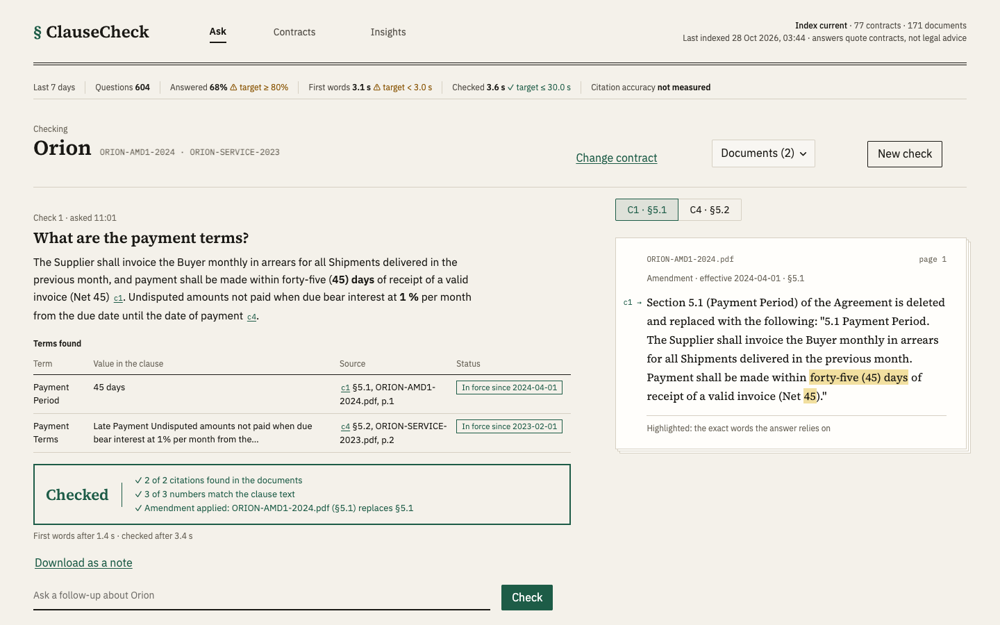

For procurement and contract teams
Check a contract term before you act on it.
Ask a question about one supplier contract and its amendments. The answer quotes the clause it comes from, and ClauseCheck confirms each citation and number against the document before you see it.

How an answer is checked
Each check runs against one contract and its amendments only. These are the steps, and what you will see at each.
- Find the clauses. The question is matched to clauses in that contract and its amendments, and the current version of each term is chosen.
Found 2 clauses in 2 Orion documents · 0.4 s - Write from those clauses only. The answer may use nothing else, and says so when the contracts do not contain the term.
Writing the answer from those clauses only - Check every citation and number. The program, not the model, looks for each cited clause and each figure in the document text.
2 of 2 citations found in the documents
3 of 3 numbers match the clause text - Show the clause. The cited page is shown with the exact words the answer relies on highlighted, so you can read the source.
Checked · or · Verify, naming the number that was not found
What it will not do
The limits, stated up front.
- No questions across contracts. A check covers one contract. A question that names another contract is refused, not answered from the wrong one.
- No guessing. If the contract has no such term, the answer is “No term found”, and nothing is invented to fill the gap.
- No estimating redacted values. A figure hidden in a filing stays hidden.
- No legal advice. Answers quote contracts. They do not say what you should do.
Results so far
Loading the latest figures.
| Measure | Result | Target | Status | Basis |
|---|
What’s indexed
The index holds public contracts and generated examples.
| Source | How it is labelled |
|---|---|
| CUAD v1 contracts | Distributor, supply and service agreements from SEC filings, labelled with the contract name. |
| SEC EDGAR amendments | Each amendment is linked to the agreement it changes, with its effective date. |
| Vendor documents | Public data processing terms and service levels, labelled with the vendor. |
| Synthetic examples | Price schedules and certificates generated for testing. They are not real agreements. |
The indexed documents are public filings or generated examples. A document you file yourself is stored in your own deployment of ClauseCheck.